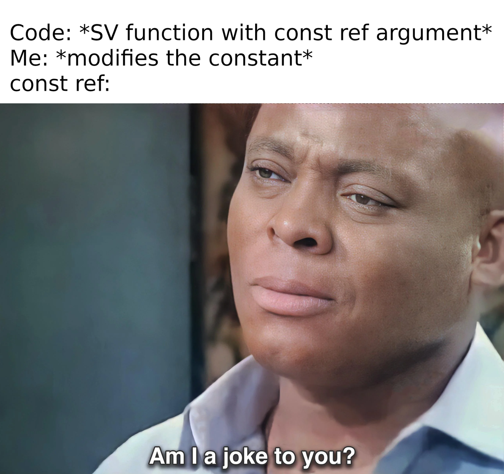

Constant Reference in SystemVerilog: Is It Really Constant?
Posted on 14 Jan 2024 in Verification • 4 min read
Usually, a programmer uses const ref for a method argument when they want to show an intention to have read-only variable that isn't a copy of an original one. And this works as a hint perfectly, but what 'constant' guarantees can the simulator actually provide? So, I've started digging...

Constant reference
First of all, SV 2017 standard in "13.5.2 Pass by reference" has only two sentences and and an example related to const ref:
To protect arguments passed by reference from being modified by a subroutine, the const qualifier can be used together with ref to indicate that the argument, although passed by reference, is a read-only variable. When the formal argument is declared as a const ref, the subroutine cannot alter the variable, and an attempt to do so shall generate a compiler error.
task automatic show ( const ref byte data [] );
for ( int j = 0; j < data.size ; j++ )
$display( data[j] ); // data can be read but not written
endtask
So, it should be more or less clear, that if you put a const variable on LHS, you get an error. However, what about array methods or members of an object?
There is also one insight on constant object handles in "6.20.6 Const constants":
In other words, the object acts like a variable that cannot be written. ... The members of the object can be written (except for those members that are declared const).
We can also try to find something in explanations of the smartest of us (Dave Rich answers on verificationacademy):
Finally, to get to your original question, a const ref argument behaves the same as a ref argument, except that the compiler will treat the formal argument as read-only. There are a number of situations that require functions to have no side-effects (no modification of variables outside of the function except through the return value). So the LRM restricts functions in this situation to only having input or const ref arguments.
Note that you almost never need to pass a class variable or virtual interface variable by reference since the handle is already a reference to an object. And a const ref argument of this type will only prevent you from changing the handle to point to another object. It will not prevent you from writing to a member of the class object.
Interesting, huh? Let's check it on a practice.
Exploration
I've created the code that covers most of the cases with primitive data type, array and a handle. Code is annotated, so you can see when error is expected, when not, and when behavior is specific to simulator used.
So, my expectations are:
- for primitive data type (e.g.
string) - any modification should be an error; - for arrays - putting a variable to LHS should be an error, however, reaction on calls of methods with side effects is unknown;
- for handles - putting a handle to LHS should be an error, call of any method (even with side effects) should not, and behavior on any access to members is unspecified.
I have also added one special hack for a handle. This way constant qualifier is washed away and object should be modified without any restrictions.
module tb;
function automatic void ref_string(const ref string arg);
$display(arg);
arg = "foo"; // error in any simulator
endfunction
function automatic void ref_array(const ref int arg []);
$display("%p, %0d", arg, arg.size());
arg[0] = 5; // error in any simulator
arg = new[3]; // error in any simulator
arg.delete(); // simulator specific
endfunction
class foo;
string id = "foo";
int queue [$] = '{1, 2, 3};
function push_queue(int val);
this.queue.push_back(val);
endfunction
endclass
function automatic void ref_handle(const ref foo arg);
$display("%s %p", $typename(arg), arg.queue);
arg.push_queue(42); // no error in any simulator
arg = new(); // error in any simulator
arg.id = "not_foo"; // simulator specific
arg.queue = '{7, 7 ,7}; // simulator specific
arg.queue[0] = 42; // simulator specific
arg.queue.push_back(13); // simulator specific
endfunction
function automatic void ref_handle_hack(const ref foo arg);
foo noconst_arg = arg; // now it's legal to modify
noconst_arg.id = "not_foo"; // no error in any simulator
noconst_arg.queue.push_back(13); // no error in any simulator
noconst_arg.queue[0] = 42; // no error in any simulator
noconst_arg.queue = '{7, 7 ,7}; // no error in any simulator
endfunction
initial begin
automatic string str_var = "str_a";
automatic int arr_var [] = '{0, 1, 2};
automatic foo foo_obj = new();
ref_string(str_var);
ref_array(arr_var);
ref_handle(foo_obj);
ref_handle_hack(foo_obj);
$finish;
end
endmodule
Below is the table with results of testing the code above in different simulators. Columns are sorted from the most strict to the most forgiving simulator. Encoding used:
- primitive -
string,int, etc. - aggregate - array, queue, etc.
- ✅ - no compilation error
- ❌ - compilation error
| Case | VCS | Verilator | Riviera | Modelsim | Xcelium |
|---|---|---|---|---|---|
| Primitive: modify | ❌ | ❌ | ❌ | ❌ | ❌ |
| Aggregate: assign new | ❌ | ❌ | ❌ | ❌ | ❌ |
| Aggregate: modify item | ❌ | ❌ | ❌ | ❌ | ❌ |
| Aggregate: call modifying method | ❌ | ✅ | ✅ | ❌ | ✅ |
| Class: assign new | ❌ | ❌ | ❌ | ❌ | ❌ |
| Class: call method with side effects | ✅ | ✅ | ✅ | ✅ | ✅ |
| Class: modify primitive | ❌ | ❌ | ❌ | ✅ | ✅ |
| Class: modify item of aggregate | ❌ | ❌ | ❌ | ✅ | ✅ |
| Class: assign new aggregate | ❌ | ❌ | ❌ | ✅ | ✅ |
| Class: call modifying method of aggregate | ❌ | ✅ | ✅ | ✅ | ✅ |
| Class: reassign to non-const handle | ✅ | ✅ | ✅ | ✅ | ✅ |
Nothing new that every simulator behaves in its unique way, but for me was quite unexpected that Xcelium is the most forgiving one. However, it looks like it strictly follows the standard (banning everything explicitly mentioned), while others may ban some cases just for common sense. Also note, that I did't search for additional compilation arguments for any simulator, so results may vary in that case.
Conclusions
- Use
const refto express your intention to have passed by reference read-only variable within the scope. - Consider
constrather hint, than a bulletproof protection from modification, especially for a handle. This greatly depends on a simulator you use. - Write you code with care, if you want it to be simulator-agnostic. Someone may even consider banning such constructions that behave so differently in different simulators.